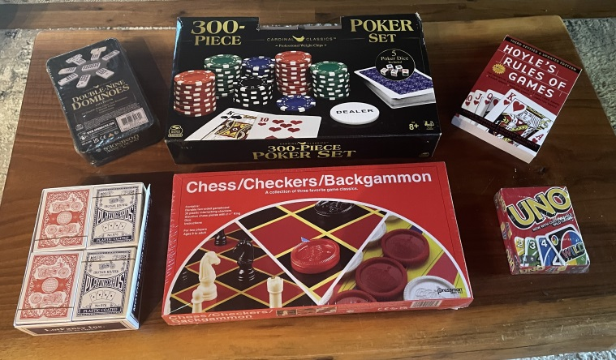

Internet access
Fiber optic internet is provided through a local internet service provider.
Router nameUpperSummit
Password#MtnFun@10!
Streaming TV
Programming is provided through YouTube TV for network and cable channels, and Netflix Premium for movies and other programming. Netflix Premium permits viewing on up to four devices at once.
- Turn on the desired TV.
- Navigate to the TV home screen.
- Select YouTube TV or Netflix. These should be near the top of the app list unless moved by a previous guest.
- Each app should be logged into the Serenity Summit account. If not, contact the rental company.
Please do not rearrange or remove these two primary apps, and do not sign out of either account.
Games
An assortment of games is provided on both the main and lower levels. Please leave them in good condition for future guests.
